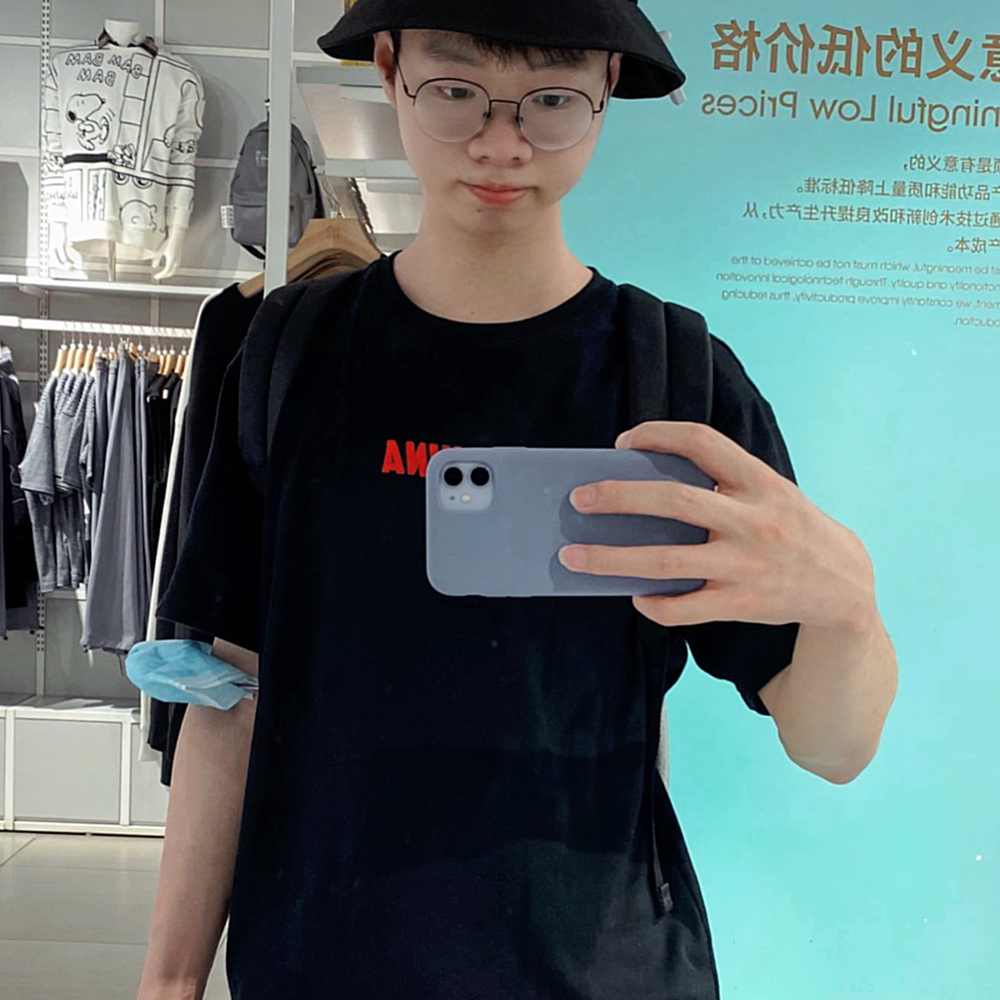

|
Zhikang Fan
I am a third-year Ph.D. student at Gaoling School of Artificial Intelligence (GSAI), Renmin University of China (RUC),
advised by Prof. Weiran Shen .
Before that, I recieved my B.S. degree at School of Software Engineering, Huazhong University of Science and Technology (HUST).
My research interests include mechanism design and information design.
Email /
Google Scholar /
DBLP
|

|
Education
Ph.D. Sept. 2020 - Present
Gaoling School of Artificial Intelligence, Renmin University of China
Ph.D. student in Computer Science
Advisor: Prof. Weiran Shen
|
|
B.S. Sept. 2016 - June 2020
School of Software Engineering, Huazhong University of Science and Technology (HUST), China
B.S. in Software Engineering
|
|
Publications
|
Zhikang Fan, Weiran Shen.
The 32nd International Joint Conference on Artificial Intelligence. IJCAI 2023.
|
|
Zhikang Fan, Weiran Shen.
The 22nd International Conference on Autonomous Agents and Multiagent Systems. AAMAS 2023 (Extended abstract).
|
|
Zhikang Fan, Weiran Shen.
Unpublished paper. Under revision to submission.
|
|
Xiaodong Liu,
Zhikang Fan,
Weiran Shen.
Unpublished paper. Under revision to submission.
|
Work Experience
Huawei, Noah's Ark Lab, Beijing, China
Research Intern • Jul. 2023 - Present
Intelligent Matching in Internet advertising
Advisor: Lan Hu , team manager
Information Retrieval Group
|
|
Experience
Huawei, Noah's Ark Lab, Beijing, China
Research Intern • Jul. 2023 - Present
Intelligent Matching in Internet advertising
Advisor: Lan Hu , team manager
Information Retrieval Group
|
|
Awards
2020, Outstanding Graduates, Huazhong University of Science and Technology
2018, Outstanding Student of Innovation, Huazhong University of Science and Technology
Scholarships
2018, HNA Scholarship
2018, Merit Student Scholarship
|